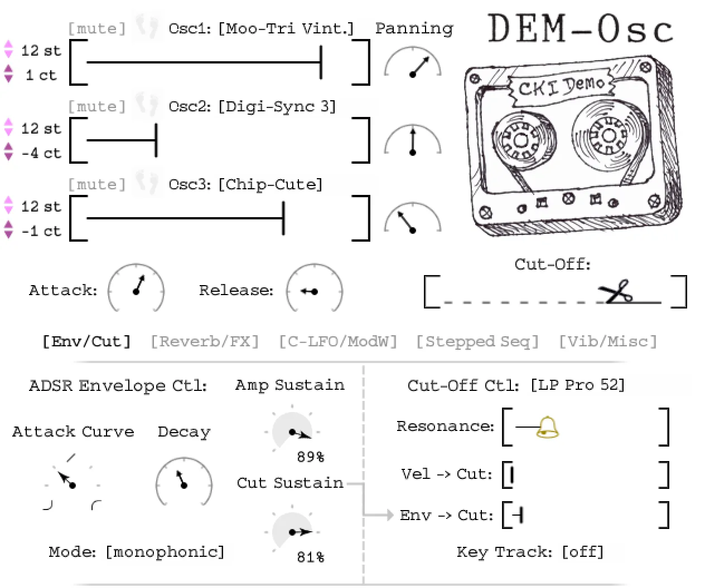

The Osc Collection
DEM‑Osc
She’s free. Now she just plays.
Five tape-warm oscillators, four convolution spaces, and twenty-five presets that already sound finished. A native synth for your DAW.
Instant download · Mac only (for now) · VST3 · AU
On your phone? Same button. Check out free and we’ll email you the download link, so it’s waiting when you’re back at your computer.
- Free, no time limit
- Full instrument, nothing crippled
- 25 presets that already sound finished
Tap the tape
One synth.
Wildly different voices.
Six sounds, straight out of DEM-Osc — sub bass, glassy pad, electric keys, singing lead, lush strings, bright brass. Tap the cassette to cycle, or pick one:
Tap a sound. It streams, nothing to download.
What’s under the tape
Five vintage oscillators,
one free plugin.
DEM-Osc takes one oscillator from each synth in our Osc Collection — saw, triangle, square, sync and chip — and stacks three at a time through four hand-built convolution spaces. Detune them, let each voice drift, and they melt into something warm and alive.
- 5Oscillators
- 5Wave shapes
- 4Reverb spaces
- 25Presets

No menus. No manual.
An instrument, not a settings page.
Turn a knob, hear it move. Glide between notes, add a little vibrato, ride the mod wheel, let each voice slip just out of tune. It’s built to be played, not configured.
- Key glide
- Vibrato
- Mod-wheel routing
- Per-voice drift
- Convolution reverb
- Convolution FX
Frequently asked
Before you download.
Is DEM-Osc really free?
Yes — completely free, with no time limit and no crippled features. It’s a full instrument and the free doorway into our paid Osc Collection.
What formats and OS does it support?
DEM-Osc is a standalone synth in VST3 and AU formats, for macOS.
What’s inside?
Five vintage oscillators sampled from real hardware, four convolution reverb spaces, and 25 handcrafted presets — with glide, vibrato, and mod-wheel routing.
Free today. Yours forever.
Download it, load a preset, and lose an afternoon.
When you want the other four oscillators, you’ll know where we live.
Mac only (for now) · adds to your cart — just add email & check out · or explore the full Osc Collection
DEM-Osc is made by Clay and Kelsy Instruments — our cute little software company. We build the instruments and the tools we need to keep producing music. Our music has been streamed over 2 million times, and our instruments downloaded over 10,000 times.